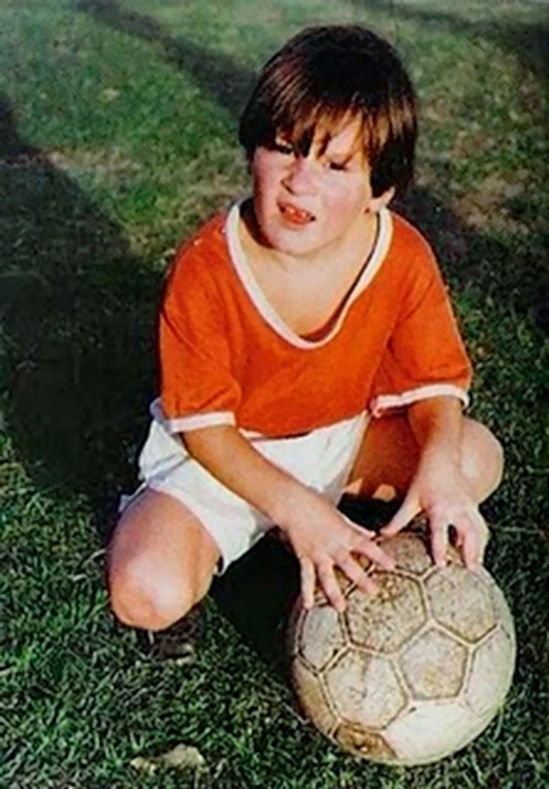

Как всё начиналось
Факт 1: Рождение в Росарио
Лионель Андрес Месси родился 24 июня 1987 года в городе Росарио, Аргентина. Он рос в рабочей семье - его отец был сталеваром, а мать работала на фабрике. Уже в 4 года маленький Лео начал играть в футбол за местный клуб "Грандоли", где его первым тренером был собственный отец.
Факт 2: Проблема с гормоном роста
В 11 лет у Месси диагностировали дефицит гормона роста. Лечение стоило около $900 в месяц, что было неподъёмной суммой для семьи. "Ньюэллс Олд Бойз" согласились платить за лечение, но затем передумали из-за экономического кризиса в Аргентине.
Факт 3: Переезд в Барселону в 13 лет
В 2000 году семья Месси переехала в Испанию. Карлес Решак, спортивный директор "Барселоны", был так впечатлён игрой юного таланта, что подписал контракт с Месси... на салфетке! "Барселона" согласилась оплатить лечение и предоставила работу отцу Лео.
Факт 4: Дебют в 16 лет
16 октября 2004 года, в возрасте 16 лет и 11 месяцев, Месси дебютировал за первую команду "Барселоны" в матче против "Эспаньола". Он стал самым молодым игроком, когда-либо представлявшим клуб в официальных матчах.